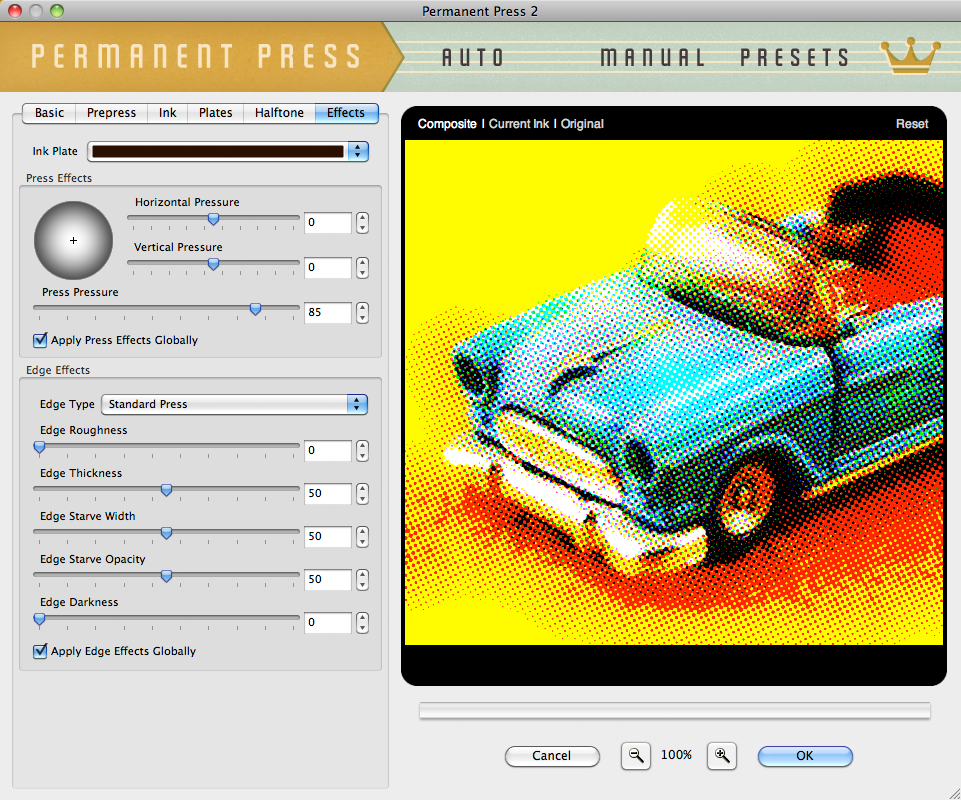
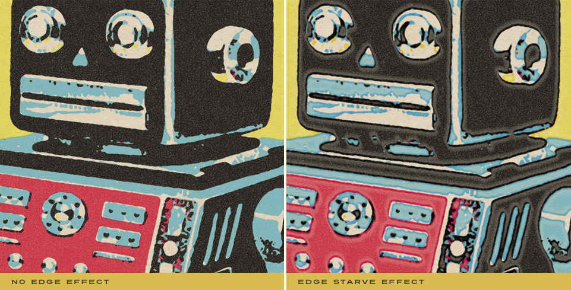
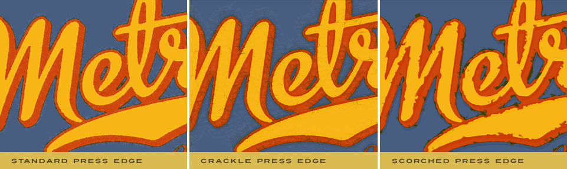

Let's Learn About Permanent Press 2
Press Effect Settings
Control the pressure of eack ink plate as it hits the pressbed or create thousands of unique printed edge effects. The Effects tabbed section allows you to fine tune every aspect of each printed ink plate edge complete with edge starve effects for a truly authentic printed look.
|  |
Printing Press Pressure Effects
- Plate Direction - The Pressure Effects controls at the top of the GUI control the direction the plate is coming down onto the surface of the paper as well as the force. Click and drag the highlight on the sphere control or use the text entry fields to the right to adjust the direction the printing plate pressure is strongest. As you may expect, the ink edges will respond to changes in the direction and adjust accordingly producing a very convincing effect.
- Press Pressure - Use the Press Pressure slider control to adjust the pressure of the ink plate on the paper surface and affect ink coverage as well. The more pressure, the darker the ink, the less pressure, the lighter the ink. By default, the Press Pressure control is set to 85 which we consider standard printing press pressure.
- Apply Press Effects Globally - Adjust and apply the Press Effects settings to any single ink plate or all by checking the box to apply globally to all ink plates.

Adjust the Edge Effects
- Edge Type - Choose from 25 different and unique edge styles to give your images an authentic printed edge. By default use Standard Press for classic offset printing edges, select a wet press for smoother edge looks or use our more expressive and destructive edge looks to create an authentic rubber stamp printed edge.
- Edge Roughness - Only after you've increased the Edge Thickness, you can then adjust the smoothness or roughness of the edge on any ink plate using this slider control.
- Edge Thickness - The thickness of any edge can be adjusted as desired but you'll notice this control on its own doesn't produce an obvious result. Edge thickness is used in tandem with all the Edge Effect and Press Effects controls and is most noticeable when Edge Roughness is increased, Press Pressure is decreased, or if Edge Starve Opacity is reduced.
- What is Edge Starve? - Imagine a freshly inked printing press plate coming down on a sheet of paper with a mighty force to press an image. Each time the plate is lifted off the sheet, the ink is drawn back to the plate and simultaneously pools in the center and the edges of the printed image. The area between these two is left under inked and appears visually lighter sometimes referred to as the Edge Starve area.
- Edge Starve Width & Opacity - The Edge Starve Width control allows you to define the Edge Starve between the natural edge of the image and the fill area. Once you've defined the Edge Starve Width, you can adjust the Edge Starve Opacity to your liking.

The Edge Effects controls really allow a significant range of visual effects but add Pressure Effects to the mix and you virtually double the amount of visual effects in the plug-in. - Edge Darkness - When printing companies laid on ink too thick, it tended to dry much darker at the edges. Use the slider control to adjust the Edge Darkness to create this authentic printed look.
- Apply Edge Effects Globally - Adjust and apply the Edge Effects settings to any single ink plate or to all by checking the box to apply this feature globally to all ink plates.

Working with the Preview Window
- Preview Options - Above the preview window at left, you'll notice some viewing options. By default the Composite option is selected to show you what all combined tabbed section effects look like applied to the image. You'll also notice the Current Ink option which will show you the specific ink plate you're working with. Use the Ink Plate Selector to change the ink plate you wish to view. At any time you can click the Original option to toggle between the unaffected image and a preview of the filtered image with all effects applied.
- Reset - Reset is located above the preview window on the right. When clicked, it will reset all Ink effect controls to their default state.
- Magnifying the Preview - Below the preview window, you'll see the magnification controls. By clicking the appropriate icon (- or +), you can decrease or increase the magnification of the preview window. The current level of magnification is shown between the magnification icons. If you prefer keyboard shortcuts, you can simply hold down the Command (Apple) key (or the Ctrl key on Windows) then press the plus sign (+) or the minus sign (-) respectively to zoom in or out of your image.
Pro Tip - Adobe Photoshop users may use keyboard shortcuts to instantly change the zoom magnification. To fit the full image within the preview window, simply hold down the Command (Apple) key (or the Ctrl key on Windows) then press the number zero (0) on the keyboard. To view the image at 100% size, hold down the Command (Apple) key (or the Ctrl key on Windows) then press the number one (1) on the keyboard. - Moving the Preview - When you have increased magnification and wish to view the texture effect on the rest of the image not visible in the preview window, simply move your mouse into the preview window and click and drag your image around to reveal the effect on your image.
- Re-positioning ink plates - To modify the position of an ink plate on your image, hold down the Command (Apple) key (or the Ctrl key on Windows) then click and drag within the preview window to reposition the center of the effect. You can change which ink plate you're repositioning via any ink plate selector dialog along the top of the plug-in.